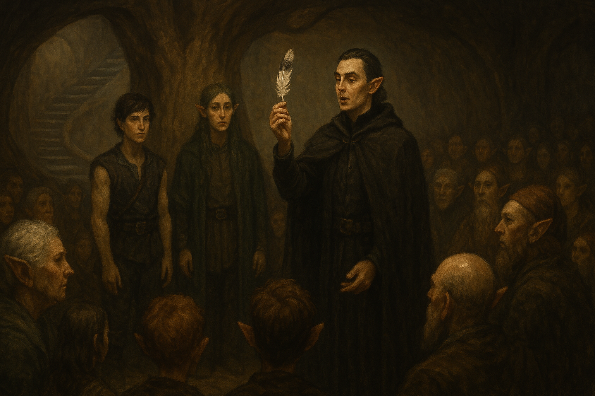

Chapter 4: Trial of the Chosen One
Mattington Shattered


Mattington Shattered
一天 3在妖精荒野
夜裡，被喜利・噢喜力驚醒的薩梅爾發現喜利・噢喜力正在塗鴉大家的臉，成功說服了他讓自己和酷爆不被畫臉。不過此時的他已經睡飽了，因此將酷爆放回帳篷後，便到處繞了繞。
薩梅爾找到了一個賣樂器的攤位，在嘗試和店家溝通後，他試彈了一把魯特琴，聲音明顯比過去英荻格送他的那把還要好。薩梅爾向店家說了英荻格後，店家便跑去將英荻格找了過來。得知薩梅爾想要買這把琴，英荻格向店家要了支筆，便在琴上簽了自己的名字，感到十分得意。接著，在薩梅爾的要求下，英荻格給了他一顆寶石，上面似乎有記了一個簽名。英荻格表示要買東西，用這個給店家感應一下，帳就記在英荻格的名下。
「之前有暗影之父，現在有阿嬤支付。」
地下城主(!?)
接著，薩梅爾在樂器攤翻了許久，找到了一把神奇的樂器。他曾聽說過迪吉里杜管，但這是他第一次見到，大小比他認知中的小了很多，大概只有不到半身長而已。試吹了一下後，薩梅爾便決定要買了。帶著兩把新的樂器，薩梅爾心滿意足地回到了帳篷去。此時除了喜利・噢喜力外，大家都睡飽了。大家也沒有多想，便把喜利・噢喜力給挖了起來，準備參與今天最重要的事：那場屬於米多莉和波的試煉。然而，當大家準備出發時，薩梅爾卻發現龍恩不見了。
猶豫著該不該先去把龍恩找出來，大家最終決定先去找艾爾比，龍恩也許先跑去試煉場了也說不定。在居民的帶路下，大家見到站在中心樹邊的艾爾比，與平日穿著純白的衣服不同，今天的他，換上了全黑的裝扮。米多莉詢問艾爾比能否先吃個早餐，但艾爾比表示是時候進行試煉了。
在艾爾比的呼喚下，帳篷內的居民們通通向中心樹靠了過來。艾爾比念起咒語，突然間，地面開始震動，中心樹陡然向上拔起，露出了一個巨大的樹洞。艾爾比帶頭從走入樹洞，居民們也隨後跟上，冒險者們則走在最後。樹洞內是向下盤旋的樓梯，一路降下到帳篷底下巨大的廣場。
踏出樹洞內的樓梯，居民們紛紛繞到廣場的邊緣，把中間留給艾爾比和參與試煉的米多莉與波。艾爾比一面以妖精語向居民們宣佈試煉即將開始，一面和米多莉和波簡單說明，每次試煉都會有不同人負責主持，且試煉的內容也不一樣。這一次將有五個試煉，考驗兩人的各種能力。
第一項是奉獻試煉，兩人被要求各給予居民們一個屬於他自己的東西。波拿起了小刀，將他的長髮割斷，並將他的頭髮遞給廣場周圍的居民們，最後留下一根，遞給了米多莉。接著，他用普通語，告訴居民們，雖然自己來這裡不久，但是希望自己可以成為這個群體的一部份，就像現在把自己的頭髮送給大家，大家都能保有他的一部份一樣。輪到米多莉，他唱起了名為真正的朋友的歌，將這首歌獻給居民們，希望能成為大家的朋友。
第二項是感官試煉。艾爾比請三名居民各拿一個不透光的箱子來到他的面前，接著，他從自己的口袋內拿出了一根羽毛，潔白色，但中間有幾簇黑色的分岔。艾爾比表示這是一根被先祖征服者洛林親吻過的羽毛，請兩人找出這根羽毛被放在三個箱子中的哪一個？接著，他朝空中一拋，再次抓住羽毛時，羽毛便消失了。這回由米多莉先，他試著去感應，排除了其中一個箱子，隨後再次感知，找到了羽毛所在的箱子。艾爾比協助米多莉，將羽毛從箱子內取出。拿著羽毛，米多莉哼起他曾聽過的「洛林精神」，彷彿在居民中，也微微響起一起哼唱的旋律。接著，波坐了下來，閉起雙眼。他的雙手在三個箱子之間遊蕩，過了好幾分鐘，他做好了決定，將手伸入其中一個箱子，從箱子中眾多的羽毛中取出那根被洛林親吻過的羽毛。
第三項是預見試煉。艾爾比請兩人透過中心樹，讀取他們所看見妖精荒野的未來，並分享給居民們。波先背對著樹，用雙手觸碰樹皮，並緩慢呼吸。不久後，他站了起來，大聲地朝著居民們，說著自己從中心樹中，讀取到了不管救世主是誰，妖精荒野會繼續繁榮、和平、穩定幾千幾萬年，甚至會將帳篷持續向外擴展，把帳篷外的危險去除。輪到米多莉時，米多莉將手碰向樹。然而，他只看見在黑暗之中，一個人的身影，那人是小雪。穿著簡樸的小雪的口中似乎念著什麼，但米多莉聽不見。他仔細從小雪的唇語，解讀他的意思。小雪告訴米多莉自己感覺快要消失了，要米多莉放他自由，只要米多莉還思念著他，自己就無法自由。米多莉試著想和他對話，但得到的消息都沒什麼幫助。暫時將手移開樹，米多莉再次透過中心樹讀取，畫面中依然只有小雪。小雪和米多莉說著再見，然後就消失了。米多莉感到心慌，再次嘗試與中心樹連結。這次，他看見了妖精荒野的大帳篷，有個人從帳篷外竄了進來，隨後，大量的人也竄進了帳篷，然後帳篷內的燭火都被熄滅了。帶頭那人的臉是小雪。米多莉和艾爾比說明這件事，並表示自己這樣好像沒有看到妖精荒野的未來，艾爾比則表示這樣的資訊對妖精荒野已經很有幫助了。
第四項是決心試煉。艾爾比表示這項試煉會請兩人分別攻擊對他們來說最重要的人。米多莉告訴艾爾比自己沒有攜帶任何武器，於是艾爾比便幫他向居民要了一根木棍。這回由米多莉先，波則先被帶到了樹的另一側。艾爾比透過魔法，幻化出了一個人影，是跪在地上的小雪。雖然剛剛已透過中心樹看見了小雪，米多莉還是在心情上受到很大的影響。米多莉試著和小雪對話，最終依然下不了手，只好請艾爾比將幻象解除。輪到波時，米多莉被帶到樹的後方。被幻化在波眼前的是米多莉。波一開始也感到十分震驚，但在認定了這只是個幻象後，波揮出了一拳，幻影也就消失了。
最後一項是力量試煉。艾爾比請兩人同時用最大的力氣朝著中心樹攻擊，目標是將中心樹打斷。對於這樣的要求，米多莉感到有些困惑，畢竟中心樹是這裡的骨幹，裡面還乘載了所有人的知識與記憶，這樣的行為十分古怪。艾爾比表示不用擔心，這只是試煉的一部份而已。半信半疑之下，米多莉和波便開始攻擊中心樹。見到中心樹被攻擊，居民們感到慌張與困惑，試圖衝到廣場中心進行阻撓，但艾爾比突然間在樹的周圍設起了一道藍色的屏障，將中心樹、自己、米多莉和波與其他人區隔開來，同時，自己也開始使用魔法朝著中心樹攻擊。
廣場周圍的群眾全部都繞到屏障周圍了，但是只要身體距離屏障太過接近，就會被彈開來，根本無法介入。薩梅爾試著尋找英荻格阿嬤，並將英荻格帶到大家身邊，討論該怎麼做。基於根本無法進到屏障內，大家最終只得到一個結論：先穿越回物質世界，再穿越回到帳篷的上層，從上方進行干預。於是在英荻格的帶領下，薩梅爾、YHWH和法朗茲穿越回了物質世界，留下待在妖精荒野的喜利・噢喜力隨時監控著米多莉和波的狀況。
回到物質世界，多倫維爾的天氣已經開始熱起來了。薩梅爾走進之前住過的酒館，向老闆詢問白醫師之前都住在什麼地方。老闆帶著大家，繞到了一座農田旁的小屋，裡面空蕩蕩的，就像不曾有人住過一樣。大家對這個房間檢查了一遍，YHWH發現床底版似乎有兩個像拉索斯語的印記，請法朗茲幫忙確認。大家才意識到艾爾比很可能一直都是拉索斯教的人。薩梅爾問起英荻格之前聽說曾經在妖精荒野被抓到的拉索斯教信徒，到底是發生了什麼事情？於是英荻格便準備開始分享。然而，此時YHWH和法朗茲突然對於英荻格是誰感到困惑。在英荻格的說明下，薩梅爾才了解到，妖精以外的生物在回到物質世界後會有記憶消失的現象，因此對在妖精荒野認識的英荻格才會完全失憶。薩梅爾也趕緊簡單和YHWH和法朗茲說明米多莉和波現在遇到危險了，大家得趕快想好解決辦法，回到妖精荒野拯救他們。
在英荻格的說明下，大家了解到妖精荒野曾抓到的拉索斯教徒，似乎來回於兩個世界很多次，將妖精荒野的知識與物品帶給了拉索斯教，但是他被關押在什麼地方還是沒有得到答案。
在薩梅爾等人回到物質世界的短短時間內，中心樹已經快要倒了。一瞬間，艾爾比將手搭在波肩上。米多莉見狀，趕緊透過法術，將艾爾比施放的法術轉移到自己身上，兩人與樹外的屏障便消失了，只留下波。原本圍繞在屏障外的居民們紛紛衝向樹邊，試著攀上樹，想爬回地面去。波和喜利・噢喜力相聚，喜利・噢喜力從自己的背包拿出網子，計劃等等將網子向上拋，勾在樹上，讓波可以藉此爬回地面去。
在一片虛無中，米多莉看見自己和艾爾比兩人懸空飄著，艾爾比捲起的袖子上，全是拉索斯的經文。米多莉將艾爾比踩著，試圖用剛剛拿在手上的木棍朝他的臉用力砸下去，準備砸第二下時，他看見小雪的臉出現在他的眼前，但是他還是狠下心，用力砸了下去。而當第三下砸下去時，艾爾比已經動也不動了。
好一段時間後，米多莉聽見了遠方傳來的步伐聲。他小心翼翼地跟著步伐的方向平行的走，走了一段時間後，發現步伐聲消失了。米多莉朝著那方向前進，卻失去了方向感。他試著向津菈祈禱，身體便開始漂浮，然後終於停了下來。雖然眼前依然一片漆黑，米多莉似乎摸到了周圍像是簾幕一般的構造。好奇之下，他點起了火把，將火把朝簾幕外伸了出去—
英荻格試著將大家從物質世界傳送回到妖精荒野，但因為不久前才剛穿越過，體力不夠，因此這個重責大任便落到了薩梅爾身上。在極度專注下，薩梅爾順利的將大家傳送回到了妖精荒野帳篷的上層，但大家卻發現上層的帳篷一片漆黑，薩梅爾甚至發現周圍有大量不是帳篷內居民的氣息。YHWH趕緊用魔法將上層的中心樹周圍點起營火，但還是看不太清楚。
薩梅爾突然看見帳篷外出現了一小道光，一支拿著火把的手從帳篷外伸了出來，然後又縮了回去。基於好奇，YHWH跑了過去，將帳篷拉開，外面是漆黑的野外。不過，聽見了YHWH和薩梅爾的說話聲，簾幕另一側的米多莉鼓起勇氣，走了過來，大家便相聚了。
薩梅爾透過幻象，將聲音傳遞到帳篷的下方，得知喜利・噢喜力的計畫，於是從上方接住了喜利・噢喜力的網子，請英荻格坐在網子上，固定住網子。帳篷底下，居民們爭先恐後地想爬上網子，波大聲喊著自己是救世主，自己應該先爬，於是便第一個爬上了網子，上方的冒險者則將他拉到了地面上。接著，居民們紛紛爬了上來，大家也在地面上將居民們都拉了上來。最後剩下極少數的居民時，喜利・噢喜力才爬了上來，他估計這個網子大概下次用一下就會壞了。
當所有居民都被拉了上來後，米多莉和英荻格問了一下這裡是否有什麼領導者，但是似乎除了艾爾比外，沒有人有這樣的領導風範，可能他或是波是現在最能登高一呼的人選了。於是，米多莉請英荻格代他翻譯。米多莉和居民們告知艾爾比是拉索斯教的人，他的手臂上刺滿了拉索斯的經文，請大家幫忙確認身邊的夥伴們手上是否有拉索斯的經文。
Day 3 in the Feywild
At night, Samael, who was awakened by Siri, found that Siri was painting everyone's faces, and successfully persuaded him to prevent himself and Kubao from having their faces painted. However, he was already full of sleep at this time, so after placing Kubao back in the tent, he walked around.
Samael found a stall selling musical instruments. After trying to communicate with the store, he tried playing a lute, and the sound was obviously better than the one Indigo gave him in the past. After Samael told the store Indigo, the store ran to find Indigo. Knowing that Samael wanted to buy this piano, Indigo asked the store for a pen and signed his name on the piano, feeling very proud. Then, at Samael's request, Indigo gave him a gem that seemed to have a signature written on it. Indigo means you want to buy something, use this to feel the store, and the account will be recorded in the name of Indigo.
"Before there was the Shadow Father, now Grandma pays."
DM(!?)
Then, Samael rummaged through the musical instrument stall for a long time and found a magical instrument. He had heard of Didgeridoo before, but this was the first time he had seen it. The size was much smaller than he knew, probably only less than half the body length. After trying it out, Samael decided to buy it. With two new instruments, Samael returned to the tent contentedly. At this time, everyone is asleep except Siri. Without thinking too much, everyone dug up Siri and prepared to participate in the most important thing today: the trial belonging to Midori and Beau. However, when everyone was preparing to set off, Samael discovered that Ron was missing.
After hesitating whether to find Ron first, everyone finally decided to go find Elby first. Ron might go to the training ground first. Under the guidance of the residents, everyone saw Elby standing by the central tree. Unlike his usual pure white clothes, today he was dressed in all black. Midori asks Elby if he can have breakfast first, but Elby says it's time for the trial.
At Elby's call, the residents in the tent all moved towards the central tree. Elby chanted a spell, and suddenly, the ground began to shake, and the central tree suddenly pulled up, revealing a huge tree hole. Elby took the lead and walked into the tree hole, followed by the residents, and the adventurers walked last. Inside the tree hole is a spiral staircase, all the way down to the huge square under the tent.
After stepping out of the stairs in the tree hole, the residents walked around to the edge of the square, leaving the middle between Elby and Midori and Beau who participated in the trial. While Elby announced to the residents in Fey that the trial was about to begin, he briefly explained to Midori and Beau that each trial would be hosted by a different person, and the content of the trial would be different. This time there will be five trials to test the various abilities of the two people.
The first was the Trial of Giving, in which each of the two was asked to give something of his own to the residents. Beau picked up a knife, cut off his long hair, and handed his hair to the residents around the square, leaving one last and gave it to Midori. Then, in Mandarin, he told the residents that although he had been here not long ago, he hoped to become part of this group, just like giving his hair to everyone so that everyone can keep a part of him. When it was Midori's turn, he sang a song called True True Friend, dedicating the song to the residents in the hope of becoming everyone's friend.
The second item is a trial of the senses. Elby asked three residents to each bring a light-tight box to him. Then, he took out a feather from his pocket, which was pure white, but with a few clusters of black branches in the middle. Elby said that this was a feather that had been kissed by the ancestor the conqueror Lorraine. Ask the two of them to find which of the three boxes this feather was placed in? Then he threw it up in the air and when he caught it again, it disappeared. This time, Midori acted first. He tried to sense and eliminated one of the boxes. Then he sensed again and found the box where the feathers were. Elby assists Midori in removing the feathers from the box. Holding the feather, Midori hummed the "Spirit of Lorraine" that he had heard before, as if the residents were also humming the melody. Then, Beau sat down and closed his eyes. His hands wandered between the three boxes. After a few minutes, he made a decision, reached into one of the boxes, and took out the feather kissed by Lorraine from among the many feathers in the box.
The third item is anticipating trials. Elby asked the two to read the future of the Feywild they saw through the central tree and share it with the residents. Beau First turn your back to the tree, touch the bark with both hands, and breathe slowly. Soon after, he stood up and loudly spoke to the residents, saying that he had read from the central tree that no matter who the savior was, the Feywild would continue to be prosperous, peaceful, and stable for tens of thousands of years, and would even continue to expand the tent outwards to eliminate dangers outside the tent. When it was Midori's turn, Midori touched his hand to the tree. However, he only saw the figure of one person in the darkness, that person was Yuki. Yuki, who was dressed simply, seemed to be saying something, but Midori couldn't hear it. He carefully read Yuki's lips to decipher his meaning. Yuki told Midori that he felt that he was about to disappear and asked Midori to let him go free. As long as Midori still missed him, he would not be free. Midori tried talking to him, but the information I got was unhelpful. Temporarily remove your hand from the tree, and Midori is read through the center tree again. There is still only Yuki in the screen. Yuki and Midori said goodbye and disappeared. Midori got flustered and tried to connect to the central tree again. This time, he saw the Feywild's big tent. Someone rushed in from outside the tent. Then, a large number of people also rushed into the tent, and then the candles in the tent were extinguished. The face of the guy leading the charge is Yuki. Midori explained this matter to Elby and said that he seemed not to see the future of the Feywild. Elby said that such information was very helpful to the Feywild.
The fourth item is the trial of determination. Elby said the trial will ask two people to attack the person most important to them. Midori told Elby that he was not carrying any weapons, so Elby helped him get a stick from a resident. This time, Midori was taken first, and Beau was taken to the other side of the tree first. Through magic, Elby transformed into a figure, which was Yuki kneeling on the ground. Although he had just seen Yuki through the central tree, Midori was still greatly affected emotionally. Midori tried to talk to Yuki, but in the end he still couldn't do it, so he had to ask Elby to dispel the illusion. When it's Beau's turn, Midori is taken to the back of the tree. What was transformed in front of Beau was Midori. Beau was shocked at first, but after deciding that it was just an illusion, Beau punched and the phantom disappeared.
The last one is a trial of strength. Elby asked the two of them to attack the center tree with maximum strength at the same time, with the goal of breaking the center tree. Midori felt a little confused about such a request. After all, the central tree is the backbone of this place, and it also carries everyone's knowledge and memories. This behavior is very strange. Elby says not to worry, it's just part of the trial. Suspicious, Midori and Beau began to attack the central tree. Seeing the central tree being attacked, the residents were panicked and confused, and tried to rush to the center of the square to stop it, but Elby suddenly set up a blue barrier around the tree to separate the central tree, himself, Midori and Beau from others. At the same time, he also began to use magic to attack the central tree.
All the people around the square circled around the barrier, but as long as their bodies were too close to the barrier, they would be bounced away and they would not be able to intervene at all. Samael tries to find Indigo Grandma and brings Indigo to everyone to discuss what to do. Since there was no way to enter the barrier, everyone finally came to one conclusion: first travel back to the material world, then travel back to the upper level of the tent, and intervene from above. So under the leadership of Indigo, Samael, YHWH and Franz traveled back to the material world, leaving Siri in the Feywild to monitor the status of Midori and Beau at any time.
Back in the physical world, the weather in Dorrenville has begun to heat up. Samael Go into the tavern where you stayed before and ask the owner where Dr. White lived before. The boss took everyone around to a small house next to a farmland. It was empty, as if no one had ever lived there. Everyone checked the room, and YHWH found that there seemed to be two Lasosian imprints on the bottom of the bed. Franz asked Franz to help confirm. Everyone then realizes that Elby may have been a Rathosian all along. Samael asked Indigo what happened to the Rathos believers who were caught in the Feywild before? So Indigo is ready to start sharing. However, at this point YHWH and Franz are suddenly confused as to who Indigo is. After Indigo's explanation, Samael learned that creatures other than Fey would lose their memory after returning to the material world, so Indigo, whom he met in the Feywild, would have complete amnesia. Samael also quickly explained briefly to YHWH and Franz that Midori and Beau are now in danger. Everyone must quickly think of a solution and return to the Feywild to save them.
Under Indigo's explanation, everyone learned that the Rathosian cultist whom the Feywild had captured seemed to have traveled back and forth between the two worlds many times, bringing the Feywild's knowledge and items to the Rathosian cult. However, there is still no answer to where he was imprisoned.
In the short time since Samael and others returned to the material world, the central tree was already about to fall. For a moment, Elby put his hand on Beau's shoulder. Seeing this, Midori quickly used magic to transfer the spell cast by Elby to himself. The barrier between the two and the outside of the tree disappeared, leaving only Beau. The residents who were originally outside the barrier rushed to the tree, trying to climb up the tree and climb back to the ground. Beau and Siri get together. Siri takes out the net from his backpack and plans to throw the net up and hook it on the tree so that Beau can use it to climb back to the ground.
In the void, Midori saw himself and Elby floating in the air. Elby's rolled-up sleeves were all filled with Rasos' scriptures. Midori stepped on Elby and tried to hit him in the face with the wooden stick he just held. When he was about to hit him for the second time, he saw Yuki's face appeared in front of his eyes, but he still made up his mind and hit him hard. And when the third blow hit, Elby was motionless.
After a while, Midori heard footsteps coming from the distance. He carefully followed the direction of the steps and walked in parallel. After walking for a while, he found that the sound of the steps disappeared. Midori headed in that direction, but lost its sense of direction. He tried praying to Keinra and his body began to float, then finally stopped. Although it was still dark in front of him, Midori seemed to feel the curtain-like structure around him. Out of curiosity, he lit a torch and extended it toward the outside of the curtain—
Indigo tried to teleport everyone back to the Feywild from the material world, but because they had just traveled through it not long ago, they did not have enough physical strength, so this important responsibility fell on Samael. With extreme concentration, Samael successfully teleported everyone back to the upper level of the the Feywild tent, but everyone found that the upper tent was completely dark, and Samael even found that there were a lot of scents around him that were not residents of the tent. YHWH quickly used magic to light a campfire around the central tree on the upper level, but he still couldn't see clearly.
Samael Suddenly saw a small ray of light appearing outside the tent, and a hand holding a torch stretched out from outside the tent, and then retracted. Out of curiosity, YHWH ran over and opened the tent, revealing the dark wilderness outside. However, after hearing the voices of YHWH and Samael, Midori on the other side of the curtain took courage and walked over, and everyone gathered together.
Through the illusion, Samael transmitted the voice to the bottom of the tent and learned about Siri's plan, so he caught Siri's net from above and asked Indigo to sit on the net and fix the net. Under the tent, the residents were scrambling to climb up the net. Beau shouted that he was the savior and that he should climb first, so he was the first to climb onto the net, while the adventurers above pulled him to the ground. Then, the residents climbed up one after another, and everyone also pulled the residents up on the ground. When there were only a few residents left, Siri climbed up. He estimated that the net would be broken next time it was used.
When all the residents were pulled up, Midori and Indigo asked if there was any leader here, but it seemed that no one except Elby had such leadership style. Maybe he or Beau is the most powerful candidate now. So, Midori asked Indigo to translate for him. Midori and the residents told Elby that he is a member of the Rathos religion, and his arms are tattooed with Rathos scriptures. Please help confirm whether the companions around him have Rathos scriptures on their hands.